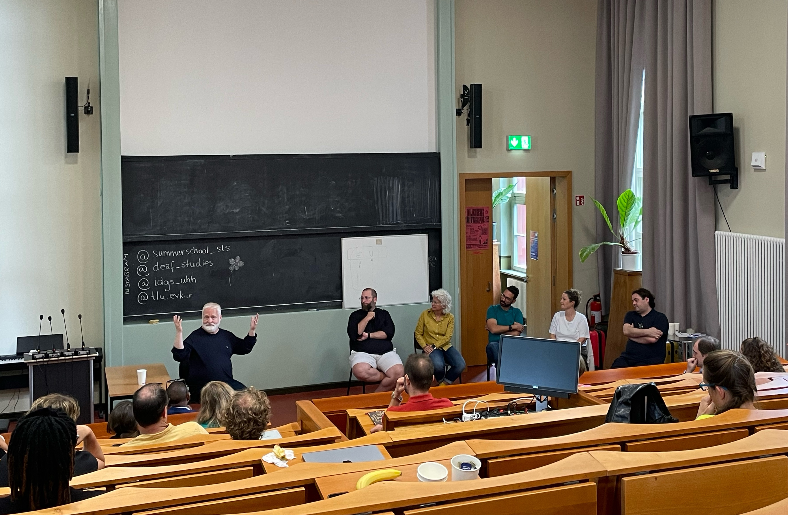

Updates
Attended Summer School in Sign Language Studies 2025
I attended the Summer School in Sign Language Studies held at the Humboldt University in Berlin. I got to meet and learn from many young deaf researchers, and to practice International Sign. I also presented preliminary research comparing depicting and lexical signs in Norwegian Sign Language. The next summer school will be at Tallinn University in Estonia next year.

Presentation at ICLC17
Ben Anible and I presented on morphosyntactic integration of depicting signs in Norwegian Sign Language at the 17th International Cognitive Linguistics Conference (ICLC17) in July 2025.
Presentation at 2nd ROLE Collective Symposium
I, along with Laura Horton, Lina Hou and Savithry Namboodiripad, presented at the 2nd ROLE Collective Symposium on May 19th 2025 on the heterogeneity of deaf and hard-of-hearing language experiences in the United States.
Silc Seminars presentation in April 2025
I presented on “Language contact & attitudes to mouthing among deaf and hard-of-hearing users of ASL in the United States” on April 29th 2025 at the Silc Seminars hosted by the TOLK research group at Høgskulen på Vestlandet.
TISLR15 presentation & student award
I presented on “Exploring the heterogeneity of DHH users of ASL in the US outside of nativeness” at TISLR15. Here are my slides and a talk-through (spoken English, English captions) of my presentation. This presentation, along with those of Veronica Escobar, Kaj Kraus and Masashi Tamura won student awards.
Dissertation now available
My dissertation is now available here: https://deepblue.lib.umich.edu/handle/2027.42/196097
New position
I started working as a postdoctoral researcher in the DEPICT project at Høgskulen på Vestlandet in Bergen, Norway in November!
Dissertation defense
I defended my dissertation titled “Attitudes to ASL-English Language Contact among Deaf and Hard-of-Hearing Users of ASL in United States” on July 24th! (Chair: Savithry Namboodiripad. Committee: Joseph C. Hill, Corrine Occhino, Patrice Beddor & Barbra Meek).
Linguistic Society of America Conference 2024
I presented part of my dissertation work on attitudes to mouthing in ASL at the LSA conference in New York. I also collaborated on a project led by Dr. Danielle Burgess and Dr. Marlyse Baptista (University of Pennsylvania) on pedagogical resources for including Creoles in undergraduate linguistics classes. More details soon!
Rackham Predoctoral Fellowship 2023-2024
I was awarded a Rackham Predoctoral Fellowship that “supports outstanding doctoral candidates working on dissertations that are unusually creative, ambitious, and impactful”.
Directions in Language Evolution (DILE) Workshop
I was invited to the Directions in Language Evolution (DILE) workshop hosted by the Center for Language Evolution Studies in Toruń, Poland, where I presented collaborative work on morphological complexity with the SignMorph group
ALT14 Conference
I participated in the “Linguistic Typology and Diversity: Theory, Methods, and Ethics in Sign Language Typology” workshop convened by Dr. Erin Wilkinson & Dr. Lynn Hou at the 14th Conference of the Association for Linguistic Typology (ALT14) in Austin, Texas. I presented “Deconstructing notions of morphological ‘complexity’: lessons from signed and spoken languages,” co-authored by Felicia Bisnath, Marah Jaraisy, Hannah Lutzenberger, Rehana Omardeen, and Adam Schembri.
LDLT6 Conference
I gave a talk at the Language Documentation and Linguistic Theory (LDLT6) Conference in December 2021, titled “Language Ideology and Language Documentation in Sign Language Typology.”
LingCologne Conference
I presented a poster at LingCologne2021 in June 2021.